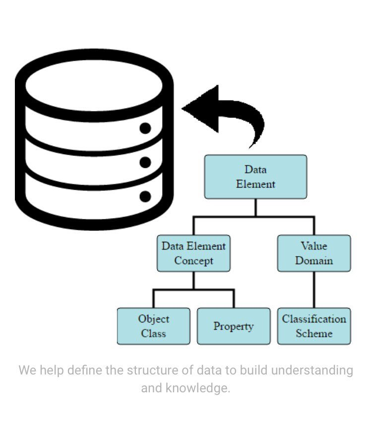

May 2017
Semantic interop = Data & context formated & organised for computers & humans to use in new & meaningful ways kerfors.blogspot.se/2011/09/semant…
Great to see #ISO11179 being the base for this interesting metadata registry @aristotlemdr aristotlemetadata.com

Not only taking about "Knowledge Management", but acting as a true "knowledge worker"! Thinking of how this applies also behind firewalls. twitter.com/chemconnector/…
Looking forward to meet @philarcher1 the 13th at @Findwise findwise.com/web-of-data-th… twitter.com/philarcher1/st…
@MCRInformatics @davidcelis Yep, interesting when your data is hierarchical / "star" this could be a nice option, see also twitter.com/kerfors/status…
Picked up nice tweets from my AZ colleague's talk tonight at #MIW17 (Medical Informatics World 2017) storify.com/kerfors/making…
Yes, using DOIs (Digital Object Identifiers) also for data, as well as for clinical trial documents (CSRs, CSPs) not only for publications twitter.com/nejm/status/84…
Nice video by @JohnHBond I'm sharing with a colleague: What is DOI (Digital Object Identifier)? youtube.com/watch?v=GBKPCq…
Looking forward to tomorrow's AstraZeneca #LinkedData Community of Practice seminar @micheldumontier #FAIRprinciples force11.org/group/fairgrou…
Me too. Will be interesting to hear @philarcher1 speak. Thx @flandqvist and @Findwise for organising twitter.com/cmwallberg/sta…
"Web of Data, the future of the Internet" breakfast at @Findwise, Gothenburg 13 June with @philarcher1 eventbrite.com/e/web-of-data-…
"Sponsors should consider the growing transparency expectations and shift their focus from mere legal compliance to the ethical obligation" twitter.com/benmeg/status/…
Excellent work by @benmeg et al. Hope for phase 2. And yes, totally agree: Data heterogeneity issues when "sources allowing free-text input" twitter.com/opentrials/sta…
Deliberate decision:
*Study* URI = Study *Page* URI = Study *Page* URL
see kerfors.blogspot.se/2016/11/opentr…
*Study* URI = Study *Page* URI = Study *Page* URL
see kerfors.blogspot.se/2016/11/opentr…